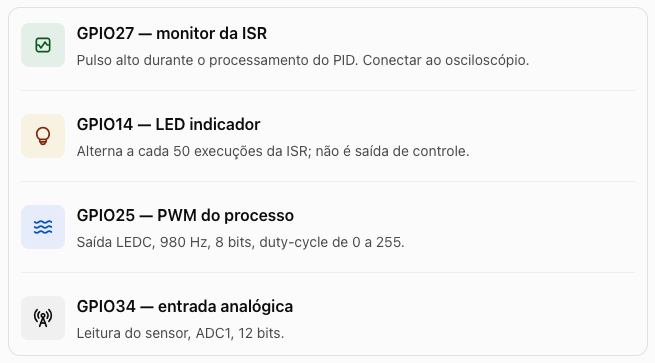
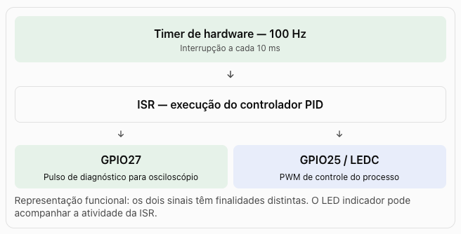
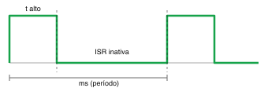

Implementação de um controlador PID digital utilizando ESP32ObjetivoOrganização geral do sistemaPinos UsadosArquitetura Adotada para a AplicaçãoTemporização: utilização de um timer de hardwarePor que utilizar um temporizador?Temporizadores do ESP32Configurando uma frequência de 100 HzConfiguração do temporizador (software)E o prescaler?Como associar uma ISR ao temporizadorO que acontece quando ocorre a interrupção?Implementação da rotina de interrupçãoCuidados ao programar uma ISRLeitura do sinal analógico: ADCUso do A/D do ESP32Propostas para uso do A/D do ESP32Uma RessalvaSaída de controle: PWMO que é PWM?Resolução do PWMConfiguração do PWM no Arduino-ESP32 Core 3.xAtualização do duty cycleMais de um canal PWMO periférico LEDCConfiguração do PWMPWM e período de amostragem são coisas diferentesUm cuidado com a atualização do PWMPor que utilizar PWM em vez de uma saída analógica D/A?Organização das variáveis compartilhadasMedição do tempo de execução da ISRComunicação serial e ajuste dos parâmetrosOrganização do programaConsiderações finaisReferências e documentação complementar1. Ambiente Arduino-ESP32 e temporizadores2. Geração de sinais PWM3. Conversão analógico-digital4. Interrupções, FreeRTOS e acesso a variáveis compartilhadas5. Arquitetura e periféricos do ESP32Código Referência
Este material apresenta uma proposta de implementação de um controlador PID digital em uma placa ESP32, utilizando o ambiente Arduino-ESP32.
Parte-se do pressuposto de que o estudante já conhece os fundamentos teóricos de controle digital, incluindo a lei de controle PID, a representação discreta das ações proporcional, integral e derivativa e o conceito de período de amostragem.
O objetivo, portanto, não é desenvolver novamente a teoria do PID, mas apresentar os principais recursos de hardware e software necessários para executar um algoritmo de controle em uma placa ESP32.
Como exemplo de referência, esta sendo disponibilizado o código: PID_ESP32_v0_1.txt (dê um “Save As…” e salve como .cpp ou .ino ou simplesmente abra numa outra aba no seu navegador).
O arquivo contém uma implementação demonstrativa de um controlador PID com período de amostragem de 10 ms (frequência de execução de 100 Hz), configuração de uma saída PWM e comunicação serial para ajuste de parâmetros.
Uma implementação de controle digital em um microcontrolador precisa realizar, periodicamente, algumas operações fundamentais:
No ESP32, essas operações podem ser organizadas utilizando diferentes recursos do microcontrolador.
Nesta proposta, adota-se a seguinte arquitetura:
Essa organização mantém o cálculo do controlador associado diretamente à interrupção periódica, evitando que sua execução dependa do tempo gasto com comunicação serial ou outras tarefas do programa principal.
Está sendo proposta o seguinte uso para a placa ESP32:
| Função | GPIO sugerido | Implementação |
|---|---|---|
| Diagnóstico da ISR | 27 | Alto na entrada e baixo na saída da ISR |
| Saída PWM do PID | 25 | Periférico LEDC |
| LED indicador | GPIO disponível | Indicador visual, independente da saída PWM |
O GPIO25 pode ser utilizado para PWM, mas é importante lembrar que ele também possui função DAC no ESP32 clássico. Nesta aplicação, utilizaremos sua função PWM.
Um LED de “diagnóstico” deve ser ligado ao GPIO apropriado da placa, verificando o esquema da versão específica da DevKit V4. Não é conveniente presumir que toda placa ESP32-32U tenha o LED integrado no mesmo GPIO.
Note que:
Resumidamente:

A arquitetura proposta pode ser resumida desta forma:

Explicações:
Representação funcional: os dois sinais têm finalidades distintas. O LED indicador serve apenas para confirmar visualmente a atividade da ISR.
Em um sistema de controle digital, o algoritmo deve ser executado em intervalos regulares, precisos e previsíveis.
Uma alternativa simples seria utilizar a função delay() ou consultar repetidamente o tempo decorrido com millis(). Entretanto, essas soluções não são as mais apropriadas quando se deseja estabelecer uma frequência de execução precisa e independente de outras atividades do programa.
Considere uma implementação baseada em millis() ou micros() dentro do loop():
xxxxxxxxxxvoid loop() { if (micros() - instanteAnterior >= 10000) { instanteAnterior = micros();
executaControle(); }
// Outras atividades...}Essa abordagem pode produzir uma execução aproximadamente periódica, mas o instante em que o controle é executado depende também do que estiver acontecendo no loop().
Se houver uma operação demorada, uma leitura, uma transmissão serial ou qualquer outra atividade que bloqueie a execução, o instante da próxima chamada poderá sofrer atraso.
Com um temporizador de hardware, a ocorrência do evento periódico é determinada pelo próprio periférico. A execução do loop() deixa de definir o instante em que a interrupção deve ocorrer.
É importante, entretanto, distinguir duas coisas:
Portanto, o timer fornece uma referência temporal precisa, mas não significa que qualquer ISR terá execução absolutamente livre de atrasos.
O ESP32 possui temporizadores de hardware que permitem gerar interrupções periódicas.
A interrupção é denominada Interrupt Service Routine (ISR). Quando ocorre o evento programado no temporizador, o processador interrompe temporariamente a execução normal do programa e executa a rotina associada.
O ESP32 clássico, utilizado na placa ESP32-32U DevKit V4, possui quatro temporizadores gerais de hardware (General Purpose Timers).
Esses temporizadores são periféricos independentes da execução do programa principal. Isso significa que sua contagem não depende da velocidade de execução do loop(), de chamadas a delay() ou do tempo gasto na comunicação serial.
Cada temporizador possui, em termos funcionais:
Quando o contador alcança o valor de “alarme” programado, o hardware gera uma interrupção. O processador interrompe temporariamente a execução normal e passa a executar a rotina associada à interrupção.
A frequência desejada para a execução do controlador é:
Ou seja:
Precisamos configurar o temporizador para produzir um evento a cada 10.000 microssegundos.
Na API atual do Arduino-ESP32, a função timerBegin() recebe diretamente a frequência desejada para o contador:
xxxxxxxxxxtimer = timerBegin(1000000);Nesse exemplo, o contador passa a operar a:
Logo, cada incremento do contador representa:
A escolha de 1 MHz é conveniente porque permite trabalhar diretamente com valores expressos em microssegundos.
Na versão 3.x do Arduino-ESP32, a configuração de um timer pode ser realizada utilizando as funções:
xxxxxxxxxxhw_timer_t *controlTimer = nullptr;
controlTimer = timerBegin(1000000);
timerAttachInterrupt(controlTimer, &onControlTimer);
timerAlarm(controlTimer, 10000, true, 0);A interpretação dos parâmetros é importante:
timerBegin(1000000): configura o contador do temporizador para trabalhar com frequência de 1 MHz.timerAttachInterrupt(): associa uma rotina de interrupção ao temporizador.timerAlarm(): configura o valor de contagem que produzirá o evento de interrupção.Com um contador oscilando à 1 MHz, cada incremento corresponde a 1 microssegundo.
Portanto:
Para obter uma interrupção a cada 10 ms:
Assim, o valor do alarme será 10.000.
Configurando o "alarme" (freq. da interrupção) para 10.000 incrementos:
ou,
Consequentemente, a frequência de execução será:
Na API Arduino-ESP32 Core 3.x:
xxxxxxxxxxtimerAlarm(timer, 10000, true, 0);Os parâmetros significam:
| Parâmetro | Valor | Significado |
|---|---|---|
timer | timer | Temporizador configurado |
alarm_value | 10000 | Contagem necessária para gerar o evento |
autoreload | true | Reinicia automaticamente a contagem |
reload_count | 0 | Recarga ilimitada |
Com a recarga automática habilitada, o temporizador continua gerando interrupções sem que o programa precise reprogramar o alarme a cada ocorrência.
A sequência de eventos será, idealmente:
xxxxxxxxxxTempo (ms) Evento0 Início da contagem10 Interrupção 120 Interrupção 230 Interrupção 340 Interrupção 450 Interrupção 5...
A frequência nominal de interrupções será, portanto, de 100 Hz.
O terceiro argumento de timerAlarm(), quando configurado como true, determina que o alarme seja periódico, ou seja, que o temporizador continue gerando interrupções automaticamente.
É importante distinguir a frequência do temporizador da frequência do PWM. São dois recursos independentes do ESP32, utilizados para finalidades diferentes.
No ESP32 clássico, o clock APB é nominalmente de 80 MHz em sua configuração usual.
Em uma implementação de baixo nível, seria possível obter um clock de contador de 1 MHz utilizando um divisor de 80:
Entretanto, não precisamos programar manualmente esse divisor quando utilizamos a API atual do Arduino-ESP32.
A função:
xxxxxxxxxxtimerBegin(1000000);recebe a frequência desejada, e a implementação da biblioteca configura o temporizador para produzi-la.
Esse é um dos motivos pelos quais é importante observar a versão do Arduino-ESP32: a API atual abstrai parte da configuração que precisava ser realizada explicitamente em versões anteriores.
A rotina de serviço da interrupção (Interrupt Service Routine) é uma função chamada automaticamente pelo processador quando ocorre o evento configurado no temporizador.
No Arduino-ESP32, podemos declarar uma ISR da seguinte maneira:
xxxxxxxxxxvoid ARDUINO_ISR_ATTR onTimer() {
// Código executado a cada interrupção
}O atributo ARDUINO_ISR_ATTR informa que a função deve ser preparada para execução em contexto de interrupção, com os requisitos de posicionamento em memória definidos pelo ambiente Arduino-ESP32.
Em exemplos mais antigos, é comum encontrar o atributo IRAM_ATTR. Na API atual, ARDUINO_ISR_ATTR é a forma indicada para callbacks de interrupção.
A associação da função ao temporizador é feita por:
xxxxxxxxxxtimerAttachInterrupt(timer, &onTimer);A partir desse momento, onTimer() será chamada quando ocorrer o evento de alarme do temporizador.
A configuração completa fica assim:
xxxxxxxxxxhw_timer_t *timer = NULL;
void ARDUINO_ISR_ATTR onTimer() {
// Rotina executada a cada 10 ms
}
void setup() {
timer = timerBegin(1000000);
timerAttachInterrupt(timer, &onTimer);
timerAlarm(timer, 10000, true, 0);
}
void loop() {
// O programa principal pode executar // outras atividades independentemente do timer.
}Observe que não existe uma chamada explícita a onTimer() no programa principal. A função é chamada pelo mecanismo de interrupção do hardware.
A sequência simplificada é:
onTimer() é executada.Nesta aplicação, o processo se repete a cada 10 ms.
A função associada ao temporizador deve ser declarada com o atributo ARDUINO_ISR_ATTR:
xxxxxxxxxxvoid ARDUINO_ISR_ATTR onControlTimer() { // Operacoes executadas a cada 10 ms}Esse atributo orienta o ambiente ESP32 a posicionar a rotina de interrupção em uma região de memória apropriada para sua execução.
No exemplo, a ISR é responsável por executar o algoritmo PID e disponibilizar o resultado calculado para o programa principal.
Uma rotina de interrupção deve ser a mais curta e previsível.
Não se deve utilizar dentro dela funções que possam bloquear a execução, aguardar eventos, atrasar o processamento ou depender de outros serviços do sistema.
Por exemplo, devem ser evitadas dentro da ISR:
Serial.print() e outras operações de comunicação serial;delay();No exemplo apresentado, a leitura do ADC e a atualização do PWM são realizadas fora da ISR. O cálculo do PID permanece dentro dela.
Também é necessário utilizar os mecanismos apropriados para proteger variáveis compartilhadas entre a ISR e o programa principal.
O ESP32 clássico possui conversores analógico-digitais de 12 bits.
Uma conversão de 12 bits fornece valores inteiros entre:
[ 0 \leq ADC \leq 4095 ]
No ambiente Arduino-ESP32, uma leitura pode ser realizada com:
xxxxxxxxxxint adcValue = analogRead(34);Nesse exemplo, o pino GPIO34 é utilizado como entrada analógica.
A resolução pode ser explicitada por:
xxxxxxxxxxanalogReadResolution(12);No programa de referência, a leitura do ADC é realizada no loop(), e seu resultado é disponibilizado para a ISR por meio de uma variável compartilhada.
Essa decisão evita chamar analogRead() dentro da rotina de interrupção.
Para manter uma escala numérica semelhante à utilizada no exemplo original para Arduino Uno, a leitura é redimensionada de 0–4095 para 0–1023:
Essa conversão altera a escala numérica utilizada pelo programa, mas não torna os dois conversores equivalentes em termos de características elétricas ou precisão.
Do ponto de vista de controle: a variável de processo deve ser adquirida no mesmo ciclo de execução em que o controlador calcula o erro e atualiza a lei de controle. Não é adequado deixar uma leitura assíncrona em loop() alimentar o cálculo do PID na interrupção seguinte.
Há, porém, um detalhe importante no ESP32: não basta mover analogRead() para dentro da ISR. Precisamos verificar se a função é segura para execução em uma interrupção de hardware. Vou considerar isso antes de propor a alteração, para não corrigir um problema introduzindo outro.
A consulta à documentação oficial confirma uma restrição importante:
A função analogRead() do Arduino-ESP32 utiliza o modo ADC OneShot.
A função de baixo nível adc_oneshot_read() não deve ser chamada em contexto de interrupção. A Espressif informa que ela utiliza mecanismos de exclusão mútua e pode retornar ESP_ERR_TIMEOUT quando o ADC não está disponível.
Portanto, colocar simplesmente analogRead() dentro de onControlTimer() não é uma correção tecnicamente segura.
Para manter o algoritmo do PID integralmente dentro na ISR de 100 Hz, há duas possibilidades:
true ou false. Essa abordagem evita a função OneShot de alto nível, mas exige programação específica para o ESP32 clássico e validação cuidadosa dos registradores e da sincronização com o periférico.Vamos optar pela primeira alternativa, pois preserva a arquitetura que você deseja ensinar: a interrupção periódica inicia a aquisição, obtém a amostra, calcula o erro e executa o controlador, tudo dentro do mesmo ciclo.
A estrutura desejada seria algo como:
xxxxxxxxxxvoid ARDUINO_ISR_ATTR onControlTimer(){ GPIO.out_w1ts = (1UL << PIN_ISR_TEST);
int adcValue;
if (!readADC_ISR(&adcValue)) { adcErrorCount++; GPIO.out_w1tc = (1UL << PIN_ISR_TEST); return; }
// Atualização da variável de processo pv = adcValue;
// Cálculo do erro e = sp - pv;
// Lei de controle PID // ...
// Atualização da saída de controle // ...
GPIO.out_w1tc = (1UL << PIN_ISR_TEST);}A função readADC_ISR() acima é apenas a interface pretendida, não uma implementação pronta. Ela deverá ter uma espera limitada, sem delay(), e retornar false caso a conversão não termine dentro do limite estabelecido.
Também seria necessário definir o comportamento seguro da saída PWM quando houver falha de aquisição — por exemplo, manter a última saída ou entrar em estado de segurança, conforme o processo controlado.
Observação: esta mudança não está implementada no código disponibilizado como referência.
O ESP32 não possui apenas um canal PWM. O ESP32 clássico dispõe de um periférico denominado LEDC (LED Control), que pode gerar múltiplos sinais PWM de forma independente.
No ESP32 clássico, o LEDC disponibiliza:
Os canais são associados a pinos GPIO por meio da matriz de roteamento de sinais do ESP32. Isso significa que, ao contrário de algumas placas Arduino, os sinais PWM não ficam restritos a um pequeno conjunto fixo de pinos.
O periférico LEDC foi projetado originalmente para controle de intensidade de LEDs, mas também pode ser utilizado para:
PWM significa Pulse Width Modulation, ou modulação por largura de pulso.
É uma técnica que produz uma onda retangular com frequência definida, variando o tempo em que o sinal permanece em nível alto.
O ciclo de trabalho (duty cycle) é definido por:
onde:
Em porcentagem:
Por exemplo:
| Duty cycle | Tempo em nível alto | Tempo em nível baixo |
|---|---|---|
| 0% | 0% | 100% |
| 25% | 25% | 75% |
| 50% | 50% | 50% |
| 75% | 75% | 25% |
| 100% | 100% | 0% |
A frequência do PWM não precisa ser igual à frequência de execução do controlador.
No projeto, temos duas frequências distintas:
Essa distinção é importante. O controlador pode atualizar o duty cycle a cada 10 ms, enquanto o periférico LEDC continua gerando milhares de pulsos por segundo, sem intervenção do processador a cada pulso.
A resolução determina quantos valores diferentes podem ser utilizados para representar o duty cycle.
Para uma resolução de 8 bits:
Assim, temos 256 níveis de controle, numerados de 0 a 255 na convenção usual do Arduino.
Para uma resolução de 10 bits:
A resolução e a frequência do PWM estão relacionadas às possibilidades de configuração do periférico. Frequências mais elevadas podem limitar a resolução máxima disponível.
Para reproduzir aproximadamente o comportamento de uma saída PWM de 8 bits do Arduino Uno, podemos utilizar 8 bits no ESP32.
A configuração básica de um canal PWM é:
xxxxxxxxxx
void setup() {
ledcAttach(PIN_PWM, PWM_FREQ, PWM_RESOLUTION);
}A função:
xxxxxxxxxxledcAttach(pino, frequencia, resolucao);configura o periférico LEDC e associa um canal PWM ao pino informado.
No exemplo:
A escolha de aproximadamente 980 Hz é conveniente para manter uma frequência de PWM semelhante à encontrada em algumas saídas do Arduino Uno.
A frequência não tem relação direta com os 100 Hz do controlador.
Depois de configurar o canal, podemos atualizar o duty cycle com:
xxxxxxxxxxledcWrite(PIN_PWM, valor_PWM);Para resolução de 8 bits, o valor de controle pode variar de 0 a 255.
Exemplos:
xxxxxxxxxxledcWrite(PIN_PWM, 0); // 0%ledcWrite(PIN_PWM, 64); // aproximadamente 25%ledcWrite(PIN_PWM, 128); // aproximadamente 50%ledcWrite(PIN_PWM, 192); // aproximadamente 75%ledcWrite(PIN_PWM, 255); // aproximadamente 100%A API atual do LEDC também permite selecionar explicitamente um canal, mas isso não é necessário para uma aplicação simples com uma única saída PWM.
Sim, é possível utilizar diversos canais PWM simultaneamente.
Por exemplo, podemos configurar:
xxxxxxxxxxledcAttach(25, 980, 8);ledcAttach(26, 980, 8);ledcAttach(27, 2000, 10);Cada associação configura uma saída PWM.
Entretanto, há uma particularidade importante: os canais compartilham temporizadores internos do LEDC. Canais que utilizam o mesmo temporizador compartilham frequência e resolução. Portanto, números de canal diferentes não garantem, por si só, frequências independentes.
Para aplicações com várias saídas PWM, é necessário considerar os grupos e temporizadores utilizados pelo periférico.
O ESP32 possui um periférico de hardware denominado LEDC (LED Control), que permite gerar sinais PWM.
Embora tenha sido originalmente desenvolvido para controle de LEDs, esse periférico também pode ser utilizado para gerar sinais de comando para circuitos externos, por exemplo:
A frequência e a resolução do PWM são configuradas independentemente da frequência do temporizador utilizado para executar o PID.
Na versão 3.x do Arduino-ESP32, pode-se utilizar:
xxxxxxxxxxledcAttach(25, 980, 8);Nesse exemplo:
A resolução de 8 bits permite representar:
Portanto, o valor de duty-cycle pode variar entre 0 e 255.
A atualização do sinal é realizada com:
xxxxxxxxxxledcWrite(25, pwmCommand);O valor 0 corresponde a 0% de duty-cycle, enquanto 255 corresponde aproximadamente a 100%.
O periférico LEDC gera o sinal PWM por hardware. Assim, depois de configurado, o sinal continua sendo produzido independentemente da execução do programa principal.
É fundamental não confundir os dois sinais temporais envolvidos:
A primeira frequência determina quando o algoritmo PID é executado.
A segunda determina a frequência da portadora PWM utilizada para comandar o estágio externo de potência.
Uma precaução vale para a função ledcWrite().
Ela é apropriada para atualizar o PWM no programa principal, mas não devemos assumir que todas as funções da API LEDC sejam seguras para uso dentro de uma ISR.
Uma implementação rigorosa que atualize diretamente o PWM dentro da interrupção deverá utilizar uma operação de baixo nível comprovadamente segura para esse contexto, ou uma escrita direta apropriada no periférico.
Uma alternativa mais simples é calcular o novo valor de controle dentro da ISR, armazená-lo em uma variável compartilhada e atualizar o PWM no programa principal.
Nesse segundo caso, o cálculo do controlador continua sendo executado a 100 Hz dentro da ISR, mas a atualização física do duty cycle ocorre pouco depois, quando o loop() processa o novo valor.
É importante não confundir essas duas arquiteturas.
O ESP32 clássico possui também saídas analógicas D/A (Digital-to-Analog Converter).
No ESP32 clássico, existem dois canais DAC de 8 bits, associados aos pinos:
Portanto, seria possível direcionar o valor de controle calculado pelo PID para um conversor D/A, produzindo uma tensão analógica proporcional ao valor digital.
Entretanto, nesta aplicação optou-se por utilizar uma saída PWM.
A escolha se justifica porque:
É importante observar que PWM e D/A não são a mesma coisa.
O PWM produz uma onda retangular cujo valor médio depende do duty cycle. Um conversor D/A produz uma tensão analógica proporcional ao valor digital aplicado.
Se for necessário transformar o PWM em uma tensão aproximadamente contínua, pode-se utilizar um filtro passa-baixas, por exemplo, um filtro RC, dimensionado de acordo com a frequência do PWM e a dinâmica do sistema.
Também é importante observar que os pinos DAC do ESP32 clássico não estão presentes em todos os modelos da família ESP32. A disponibilidade depende do SoC utilizado.
A ISR e o programa principal precisam compartilhar algumas informações, por exemplo:
sp;Kp, Ki e Kd;Como essas variáveis podem ser acessadas por diferentes contextos de execução, é necessário evitar acessos simultâneos inconsistentes.
O ESP32, por meio do FreeRTOS utilizado pelo ambiente Arduino, oferece mecanismos de seção crítica.
Um exemplo de declaração é:
xxxxxxxxxxportMUX_TYPE dataMux = portMUX_INITIALIZER_UNLOCKED;Para proteger um pequeno trecho de código no programa principal:
xxxxxxxxxxportENTER_CRITICAL(&dataMux);
// Acesso as variaveis compartilhadas
portEXIT_CRITICAL(&dataMux);Na ISR, devem ser utilizadas as versões específicas para interrupções:
xxxxxxxxxxportENTER_CRITICAL_ISR(&dataMux);
// Acesso as variaveis compartilhadas
portEXIT_CRITICAL_ISR(&dataMux);O objetivo é garantir que uma operação sobre as variáveis compartilhadas não seja interrompida em um momento inadequado.
As seções críticas devem ser curtas, especialmente quando utilizadas dentro de uma ISR.
Durante o desenvolvimento de um sistema de controle, pode ser interessante verificar quanto tempo o algoritmo consome para executar.
Uma solução simples consiste em utilizar um GPIO exclusivamente para diagnóstico.
No exemplo, o GPIO27 é colocado em nível alto no início da ISR e em nível baixo ao final:
xxxxxxxxxxGPIO.out_w1ts = (1UL << PIN_ISR_TEST);
// Execucao do algoritmo PID
GPIO.out_w1tc = (1UL << PIN_ISR_TEST);Essas operações acessam diretamente os registradores de saída do GPIO:
GPIO.out_w1ts: coloca o pino em nível alto;GPIO.out_w1tc: coloca o pino em nível baixo.Com o auxílio de um osciloscópio, pode-se observar o pulso produzido.
Sinal de diagnóstico — exemplo ilustrativo:

O pulso alto representa o intervalo durante o qual a ISR está executando. O desenho é esquemático e não está em escala.
Se por exemplo, o pulso permanecer alto durante 600 µs,
Isso significa que o processamento da ISR consome aproximadamente 6% do intervalo disponível entre interrupções.
É justamente essa informação que interessa medir em laboratório.
A distância entre duas bordas de subida consecutivas corresponde ao período da interrupção, aproximadamente 10 ms.
A largura do pulso corresponde ao tempo gasto pela ISR.
Atenção: a GPIO027 será usada exclusivamente como um sinal de diagnóstico. Não corresponde à saída PWM do controlador.
No exemplo, há três sinais distintos:
| GPIO | Finalidade |
|---|---|
| GPIO27 | Diagnóstico da duração da ISR |
| GPIO14 | LED indicador de atividade |
| GPIO25 | Saída PWM efetiva do controlador |
A implementação realiza faz o pino de diagnóstico comutar para nível alto no início da ISR e para nível baixo imediatamente antes de sair dela.
Por exemplo, utilizando o pino GPIO27:
xxxxxxxxxx
void setup() { pinMode(PIN_ISR_MONITOR, OUTPUT); digitalWrite(PIN_ISR_MONITOR, LOW);}Na ISR:
xxxxxxxxxxvoid ARDUINO_ISR_ATTR onTimer() {
GPIO.out_w1ts = (1UL << PIN_ISR_MONITOR);
// -------------------------------- // Aquisição e cálculo do controle // --------------------------------
// -------------------------------- // Atualização do valor de controle // --------------------------------
GPIO.out_w1tc = (1UL << PIN_ISR_MONITOR);}Aqui estão sendo utilizados acessos diretos aos registradores GPIO do ESP32 clássico:
GPIO.out_w1ts: coloca o pino em nível alto (set).GPIO.out_w1tc: coloca o pino em nível baixo (clear).Isso evita depender de funções de alto nível dentro da ISR. Para esse exemplo, o GPIO27 é apropriado, pois pertence ao banco de GPIOs de 0 a 31.
A declaração de GPIO requer:
xxxxxxxxxxO LED indicador pode acompanhar esse sinal, mas não deve ser utilizado como referência para a medição precisa do tempo de execução.
A comunicação serial permite alterar parâmetros do controlador sem precisar recompilar o programa.
No exemplo, a comunicação é inicializada com:
xxxxxxxxxxSerial.begin(115200);A velocidade de comunicação é de 115200 bits por segundo.
Os comandos são recebidos e interpretados no loop(), nunca dentro da ISR.
Os principais comandos implementados são:
| Comando | Finalidade |
|---|---|
p 10 | Ajusta o ganho proporcional |
i 2 | Ajusta o ganho integral |
d 0.1 | Ajusta o ganho derivativo |
l 0.1 | Ajusta o coeficiente do filtro derivativo |
r 340 | Define a referência |
u 120 | Define o comando manual |
u | Define comando manual igual a zero |
a | Alterna entre Manual e Automático |
a 0 | Seleciona modo Manual |
a 1 | Seleciona modo Automático |
v | Alterna a publicação de informações |
s | Apresenta o estado atual do sistema |
Quando o modo verbose está desativado, o programa publica os valores de referência, variável de processo e comando de controle. Essa saída pode ser utilizada para acompanhar o comportamento do sistema ou registrar dados para análise posterior.
O programa de referência está disponível no arquivo: teste_algo_ESP32_ISR_PID.ino
Recomenda-se observar particularmente as seguintes partes do código:
onControlTimer();loop();O arquivo completo deve ser utilizado como referência para compreender a integração entre os diferentes recursos do ESP32.
A implementação de um controlador digital em um microcontrolador envolve mais do que a transcrição da equação de controle para uma linguagem de programação.
É necessário considerar a temporização das amostras, a aquisição dos sinais, o tempo de processamento, a atualização das saídas e a comunicação com o ambiente externo.
O ESP32 disponibiliza periféricos de hardware que facilitam essas tarefas, especialmente os temporizadores e o gerador PWM LEDC.
A arquitetura apresentada é uma proposta didática para estudar a implementação de um controlador PID com período de amostragem definido por um temporizador de hardware.
Antes de conectar o sistema a um processo real, é necessário verificar experimentalmente a temporização, a aquisição do sinal analógico e a geração do PWM, além de avaliar a estabilidade e a segurança do sistema completo.
Observação sobre as versões do software: os exemplos de programação apresentados neste material utilizam a API do Arduino-ESP32 Core 3.x. Algumas funções de temporizadores e PWM foram modificadas em relação à versão 2.x. Portanto, ao consultar tutoriais ou exemplos encontrados na Internet, é importante verificar a versão do framework para evitar incompatibilidades.
As referências a seguir foram utilizadas como base para a implementação e podem ser consultadas para aprofundar os conceitos e os recursos de programação do ESP32.
timerBegin(), timerAttachInterrupt() e timerAlarm(). Apresenta exemplos de geração de interrupções periódicas.ledcAttach() e ledcWrite(), além da configuração da frequência e da resolução do sinal.analogRead() e analogReadMilliVolts(), a configuração da resolução e da atenuação, além do modo de conversão contínua.Como exemplo de referência, esta sendo disponibilizado o código: PID_ESP32_v0_1.txt (dê um “Save As…” e salve como .cpp ou .ino ou simplesmente abra numa outra aba no seu navegador).
Fernando Passold, em 23/11/2026